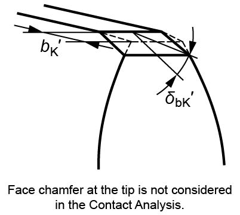
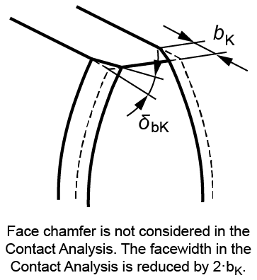

|
|
|


修形
齿形修形可以在选项卡中定义。齿顶倒角/圆角以及端面倒角也可以定义。齿廓修形和齿向修形可以在修形表中定义。


图 15.34：定义端面倒角
注意：
齿顶上的端面倒角不参与齿轮计算，因为它不会降低强度。但是，如果涉及异常大的倒角，则可以通过齿顶倒角或端面倒角来模拟 hk' 和 δbK'。标准对此未提供任何指导。
Modifications
Tooth form modifications can be defined in the tab. Tip chamfer/rounding and face chamfer can also be defined. Profile and flank line modifications can be defined in the Modifications table.
Figure 15.34: Defining face chamfer
Note:
The face chamfer on the tip is not entered for gear calculations as it does not reduce the strength. However, if an unusually large chamfer is involved, hk' and δbK' can be simulated by a tip chamfer or face chamfer. The standards do not offer any guidance for this.